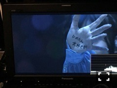
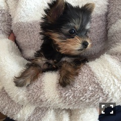
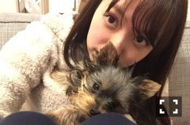

| 2017/04 01 Sat | 中元日芽香 ひめたん-0o0-その695 |
中元です、活動再開致します。
関係者の皆様、応援して下さる皆様
ご心配ご迷惑おかけしました、
誠に申し訳ございませんでした。
この数ヶ月、私の中で
いろんなことを考えましたが
また戻って頑張りたいなと
自分の意思で答えを導き出せたことが
凄く大きかったなと思っています。
体調不良って結局何ぞや！と
正直思ってると思います
友人からもたくさん聞かれました。笑
私自身は皆さんが安心して下さるなら
報告しても構わないのですが、
ここから復帰に向けて
もう一踏ん張りという段階なので
今はまだ伏せておきたいなと。
忘れた頃に言うかもしれないし
忘れたまま卒業して何年か経ってから
あ！ってなるかもしれませんし。
でもね、理由なんかよりも
結果帰ってくることができたというのが
大事だと私は思うんです。
なので皆さんはあまり深く考えず
アイドルとしての私を求めていただけたら
幸せです。夢は見てナンボですからね。
握手会、イベント、お休みした分
必ず取り返すので楽しみにしてて下さい。
参加しない現場もまだまだ多いので
混乱させてしまいますが
随時公式サイトにて確認お願いします。
モバイルメールも送りますので
設定チェンジはお早めに。

デビュー5周年迎えました
これからもよろしくお願いします！
こんなん見たら
ライブしたくなるよね！
やってくれたな！！まったく！！！
らじらー！サンデー
毎週日曜20:05～NHKラジオ第一
新年度からもよろしくお願いします
ゲストは井上小百合ちゃん。
募集中のメールテーマは
◯さゆへのメッセージ
◯ピンポーン♪隣に引っ越してきた中元です
◯スプリングジングル
◯オリひめトークセッション
おたよりの宛先は
真夏さん本当にありがとう！
4月から出られるメンバーどーんと増えます
お楽しみに( ˇωˇ )
いきなりですが

望日香(モニカ)ちゃん
ヨーキーのおんなのこです。
外に出ると良い子なのに
家では態度が横柄になります。笑
まんま私なので見てて複雑。
お姫様気質でヤンチャもしますが
とっても可愛らしいです。
中元家の4人目の姉妹、自慢の家族です。

日芽香と望日香
我が家に迎えてから早2ヶ月。
大きくなったね～
(＊´・ω・＊)